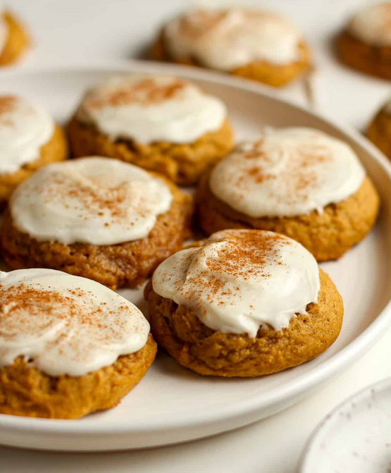

Pumpkin Cookies

For the cookies
- 4 sticks margarine
- 1 cup sugar
- 1 cup brown sugar
- 1 small can pumpkin pie filling
- 2 eggs
- 2 tsp vanilla extract
- 1 tsp salt
- 2 tsp baking soda
- 2 tsp baking powder
- 2 tsp cinnamon
For the icing
- 2 Tbsp butter melted
- 2 Tbsp Half and Half
- 1 tsp vanilla
- 2 cup powdered sugar
- Preheat oven to 350 degrees.
-
Combine flour, baking powder, baking soda, cinnamon, pumpkin pie spice,
and salt; set aside.
-
In a mixer, cream together the butter (that is at room temp) and sugar.
Add pumpkin, eggs, and vanilla to mixture; and beat until creamy.
-
Mix in dry ingredients and drop on cookie sheet using a cookie scoop.
-
Bake for 12-13 minutes in the preheated oven or until cookies are
slightly browned on top.
- Cool cookies on a baking rack.
-
Combine the melted butter, half and half, and vanilla. Then add enough
powdered sugar to make it easy to spread but not too runny that it runs
off the cookie.
- Spoon the icing on top of the cooled pumpkin cookies.